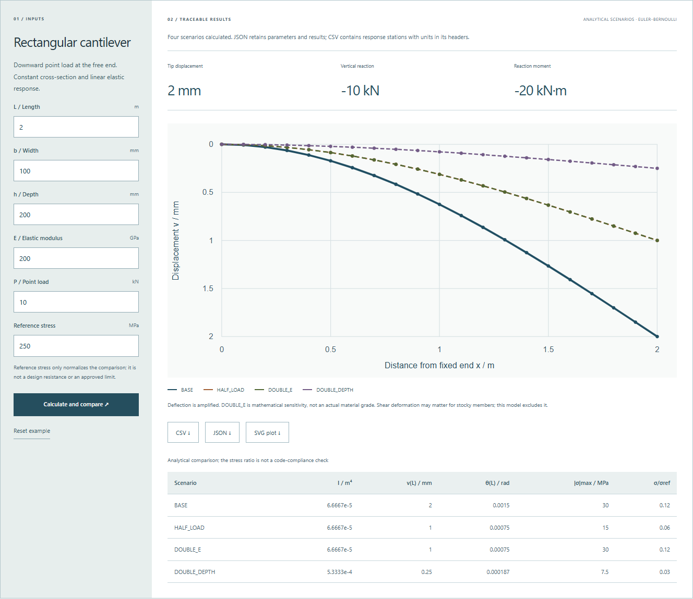

One cantilever. Parameters that explain the response.
Equilibrium, stiffness, displacement and stress with an analytical solution.
Explore a rectangular Euler–Bernoulli beam under a tip load and compare scenarios. The example supports checks against formulas and independent tests.
Rectangular cantilever
Downward point load at the free end. Constant cross-section and linear elastic response.
What is calculated.
How it is checked.
The interface runs a lightweight JavaScript implementation. The downloadable Python modules process the same examples; parity tests compare both outputs. There is no active connection to ETABS or SAP2000.
To run a module, keep _common.py in the same directory and download the example CSV. The repository includes both modules, examples and tests. _common.py ↓
Euler–Bernoulli
v(x) = Px²(3L − x) / (6EI)
θ(x) = Px(2L − x) / (2EI)
v(L) = PL³ / (3EI)
σ(x) = M(x)h / (2I)
x is measured from the fixed end. Load and displacement are positive downwards; V=P and M=P(L−x) follow the declared internal-force convention. Reactions are −P and −PL. The deflection plot is amplified and does not show the deformed geometry to scale.
The initial example gives 2.00 mm displacement, 0.0015 rad rotation and 30 MPa extreme-fibre stress. Doubling depth increases second moment of area eightfold and reduces deflection to one eighth. Self-weight, shear deformation, plasticity, buckling, connections and code checks are excluded.
Run Python and inspect tests
cd python
python cantilever.py examples/cantilever-scenarios.csv --json results.json --csv results.csv
python -m unittest discover -s tests -vDocumentation, validation and limitations ↗
Educational demonstration created for this portfolio. It is not presented as an employer’s historical tool or certified design software.
View interface capture with the initial example
